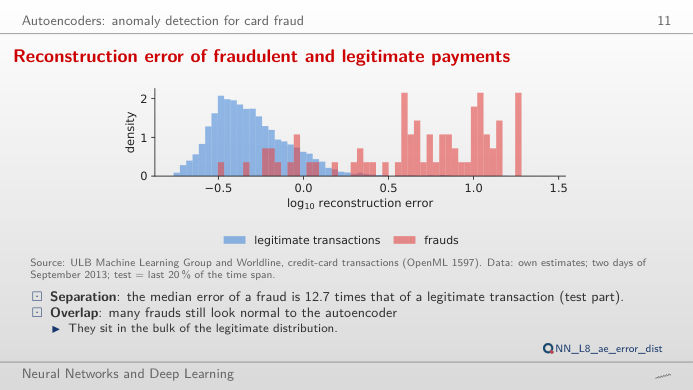
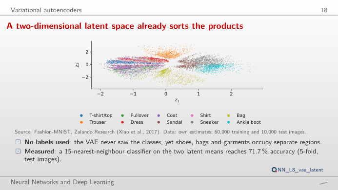
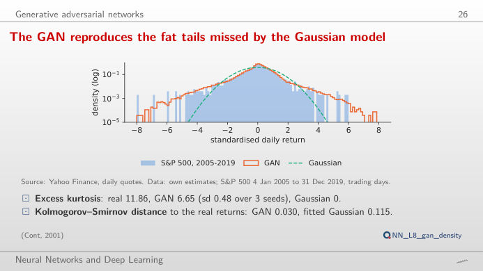
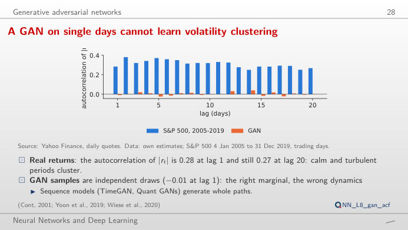
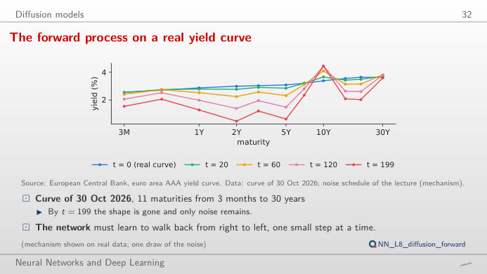
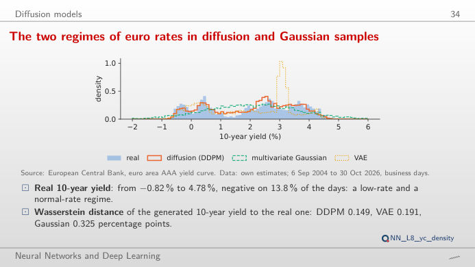

Four families of generative models, each on real data: the autoencoder (AE), the variational autoencoder (VAE), the generative adversarial network (GAN) and the denoising diffusion probabilistic model (DDPM). The slide of the lecture is on the left, the same figure on the right, recomputed in your browser from the results of the lecture when you move a control. The ▶ button moves the main parameter step by step. Under each figure: a readout, a question for the room and the Quantlet with the code of the chart.
Autoencoders: anomaly detection for card fraud · Variational autoencoders · Generative adversarial networks · Diffusion models
Autoencoders: anomaly detection for card fraud
Frauds are hard to rebuild: their reconstruction error is far larger

Answer
At 0.1% the autoencoder finds 8 frauds (recall 10.7%), principal component analysis (PCA) finds none and the logistic regression, which has seen labelled frauds, finds 48 (64.0%). At 1% (572 alerts) the three find 56, 50 and 65 frauds: with a wider budget the gap between the scores narrows, but precision falls (9.7% for the autoencoder), because legitimate transactions outnumber frauds by several hundred to one. The autoencoder needs no labels, so it is a detector of the unknown that complements, not replaces, the supervised model.
Variational autoencoders
A two-dimensional latent space already sorts the products

Answer
Footwear occupies the right of the map: around (1.5, 1.5) 94% of the 50 nearest test images are sneakers, around (1.5, −1.5) 98% are ankle boots; around (0, 2.1) the images are trousers and around (0.9, −2.1) bags. Move z₂ from 1.5 to −1.5 at z₁ = 1.5: the drawing turns gradually from a sneaker into a boot. The Kullback–Leibler (KL) term of the evidence lower bound (ELBO) keeps the codes close to a standard normal, so nearby points decode to similar images and every point decodes to something plausible. Near (0, 0) shirts and T-shirts overlap, which is why the drawing there is blurry.
Generative adversarial networks
The GAN learns fat tails that the Gaussian misses

Answer
At 1% the historical quantile is −3.48%, the GAN (seed 1) gives −3.52%, the Gaussian only −2.67%. Over 2020–2026 the first two are breached on 19 days each (1.11%), the Gaussian on 41 days (2.39%): it underestimates the tail because daily returns have fat tails (excess kurtosis 11.86 in 2005–2019). At 5% the three quantiles come close (−1.78%, −1.69%, −1.88%): the differences are in the far tail. These are unconditional quantiles: none of them reacts to the level of volatility.
A GAN on single days cannot learn volatility clustering

Answer
No. The autocorrelation of |r| is 0.28 at lag 1 in 2005–2019 and stays around 0.3 for 20 days (mean over lags 1–20: 0.31); for the GAN samples it is −0.01 at lag 1 and close to zero at every lag. The generator draws each day independently, so it can learn the distribution of one day, with its fat tails, but not the dependence between days. The signed returns r have almost no autocorrelation in either series: volatility, not direction, is predictable. A sequence model (a recurrent or convolutional GAN on windows of days) is needed for volatility clustering.
Diffusion models
The forward process on a real yield curve

Answer
From t = 117, where ᾱ_t falls below 0.5 (√ᾱ_t = √(1 − ᾱ_t) ≈ 0.71). At t = 20 the curve is almost intact (ᾱ = 0.977), at t = 60 ᾱ = 0.827, and at the last step, t = 199, ᾱ = 0.132: with the linear schedule of the lecture (β from 0.0001 to 0.02 over 200 steps) about 36% of the signal survives in amplitude. The denoising network learns to undo these steps, predicting the noise ε that was added; generation starts from pure noise and runs them backwards.
Diffusion reproduces the two regimes of euro rates; a Gaussian cannot

Answer
With the threshold at 0 on the slope: DDPM (seed 1) gives 10.5% inverted curves, the multivariate Gaussian 14.2%, the two-factor VAE only 0.3%. The Gaussian also places scenarios where real curves never were (see the scatter: it fills the space between the high-rate regime before 2012 and the negative-rate regime of 2015–2021). Switch to the 10-year yield at 0: 13.8% of real days are negative, against 9.9% for DDPM, 9.3% for the Gaussian and 11.2% for the VAE. Diffusion keeps both regimes and their curved level–slope relation; the Gaussian smooths them into one.
Card fraud: ULB Machine Learning Group and Worldline (OpenML 1597), two days of September 2013, test = last 20% of the time span, legitimate transactions weighted to the full data. Images: Fashion-MNIST, Zalando Research (Xiao et al., 2017), 10,000 test images. Returns: S&P 500 daily closes, Yahoo Finance, training 4 January 2005 – 31 December 2019, test 2 January 2020 – 30 October 2026. Yield curves: European Central Bank (ECB), euro-area AAA government bonds, 6 September 2004 – 30 October 2026, business days. Model outputs: own estimates of the lecture (analysis_L8.py).